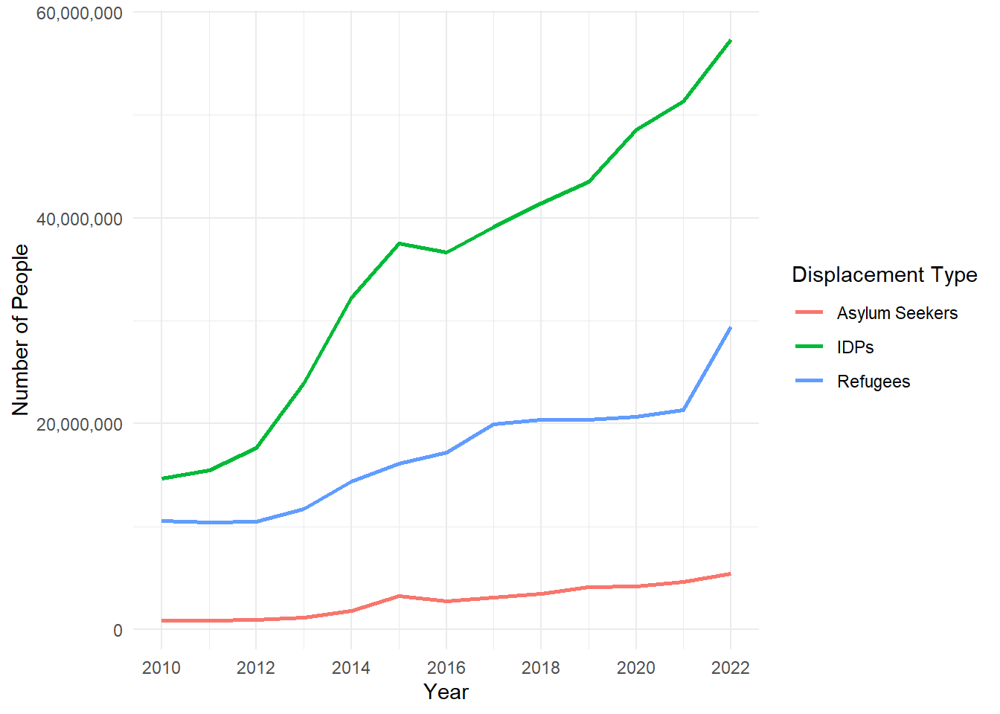

Displacement Analysis
Introduction to data
This is data on displacement between 2010 and 2022. The data is from UNHCR, UNRWA, and the IDMC, but I downloaded it from TidyTuesday.
A quick brief on terminology:
-Asylum seeker: a person who has applied or attends to apply for refugee status.
-Refugee: someone who has been forced to flee across an international border to seek safety (owing to well-founded fear of being persecuted for reasons of race, religion, nationality, membership of a particular social group or political opinion).
-Internally displaced person (IDP): a person displaced within their home country (for any reason, including disasters).
Displacement over time
The number of displaced people globally has increased substantially between 2010 and 2022 (Figure 1).
Refugees and asylum seekers per country of origin, by year
Table 1 shows the average number of refugees and asylum seekers per country of origin for the years between 2010 and 2022.
| Characteristic | 2010 N = 186 |
2011 N = 192 |
2012 N = 192 |
2013 N = 196 |
2014 N = 195 |
2015 N = 198 |
2016 N = 194 |
2017 N = 199 |
2018 N = 197 |
2019 N = 200 |
2020 N = 202 |
2021 N = 203 |
2022 N = 205 |
|---|---|---|---|---|---|---|---|---|---|---|---|---|---|
| Refugees | 1,126 (90, 15,645) | 1,115 (92, 14,278) | 1,136 (114, 14,154) | 983 (80, 10,555) | 967 (84, 10,868) | 1,009 (71, 11,340) | 1,003 (68, 11,757) | 995 (54, 12,238) | 1,085 (66, 13,512) | 875 (59, 12,649) | 734 (55, 13,844) | 752 (54, 14,253) | 816 (58, 14,933) |
| Asylum Seekers | 303 (33, 1,560) | 342 (32, 1,869) | 363 (38, 2,443) | 412 (42, 3,800) | 531 (46, 4,822) | 632 (64, 7,015) | 969 (98, 8,098) | 1,131 (95, 10,156) | 1,220 (89, 10,956) | 1,226 (100, 10,246) | 1,219 (108, 10,309) | 1,382 (120, 10,345) | 1,308 (155, 11,833) |
Regression
| Characteristic | East Asia & Pacific N = 4,2161 |
Europe & Central Asia N = 11,1231 |
Latin America & Caribbean N = 6,5251 |
Middle East & North Africa N = 11,2161 |
North America N = 3721 |
South Asia N = 5,1641 |
Sub-Saharan Africa N = 24,5091 |
Unknown N = 1,6841 |
|---|---|---|---|---|---|---|---|---|
| Asylum_Seekers | 6 (0, 40) | 6 (0, 38) | 8 (0, 51) | 10 (0, 72) | 5 (0, 14) | 14 (5, 123) | 10 (0, 62) | 0 (0, 42) |
| Refugees | 11 (5, 65) | 13 (5, 78) | 9 (5, 54) | 16 (5, 129) | 5 (0, 16) | 13 (5, 123) | 12 (5, 91) | 6 (0, 204) |
| 1 Median (Q1, Q3) | ||||||||
Table 2 shows the results of a regression that XYZ refugees fled from between 2010 and 2022.